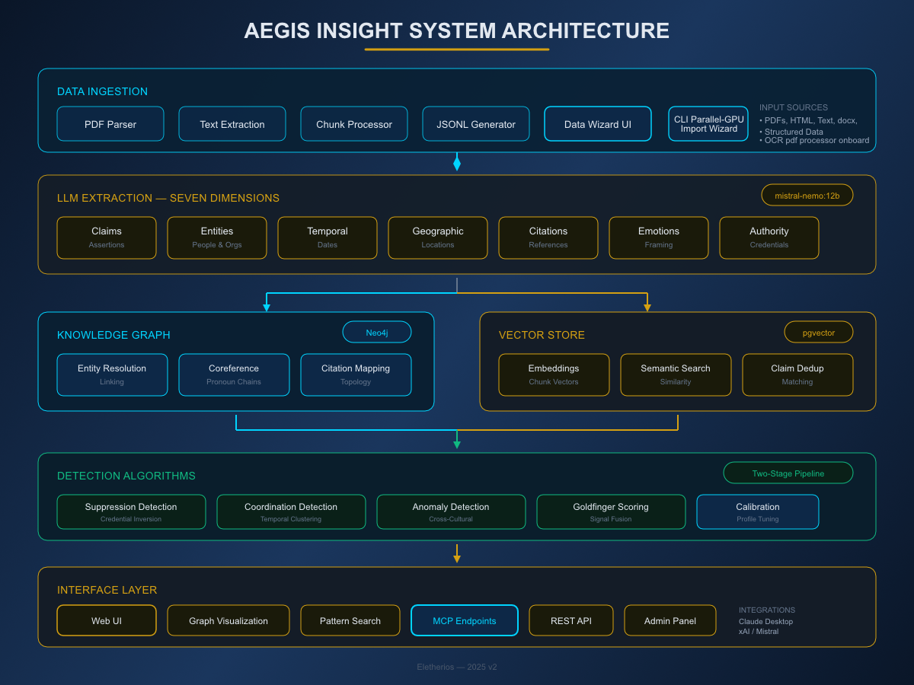

Your RAG system retrieves documents. Aegis Insight reveals structure—showing where perspectives cluster, where they diverge, and what bridges them.
From retrieval to understanding.
Your AI finds relevant content. It doesn't understand the landscape that content comes from.
When you query a RAG system about a contested topic, it returns the top-K most relevant chunks. What it cannot tell you:
This is the difference between retrieval and understanding.
When your AI can see the shape of knowledge, new capabilities emerge
Your AI knows when a topic is contested and presents multiple viewpoints—because it can see they exist, not because you told it to hedge.
See where fields actually disagree, which sources bridge perspectives, and which credentialed voices are being overlooked—across thousands of documents.
Your AI responds with nuance on contested topics and certainty on settled ones—because it knows the difference structurally, not statistically.
Detect manufactured consensus, coordinated messaging, and systematic exclusion patterns before they compromise your AI's outputs.
Rich extraction enables topology analysis that flat embeddings cannot achieve
| Traditional RAG | With Aegis Insight |
|---|---|
| Returns 10 similar chunks | Reveals 3 perspective clusters with relationship mapping |
| No context on agreement | Shows organic vs. coordinated consensus |
| Misses marginalized sources | Surfaces overlooked credentialed voices |
| AI is overly confident | AI responds with appropriate nuance |
| No bridging insights | Identifies claims that connect opposing views |
Documents pass through seven-dimensional extraction, creating the rich substrate required for topology analysis:
Once you can see what organic knowledge topology looks like, you can recognize when it looks artificial:
Identifies systematic marginalization—high-credential sources with low visibility, primary research ignored by meta-claims, citation network isolation despite topical relevance.
Identifies synchronized messaging—temporal clustering of publication, linguistic similarity across sources, network density patterns suggesting organized origin.
Identifies structural outliers—unusual claim type distributions, authority-visibility inversions, citation patterns that suggest non-organic dynamics.
Local-first processing with dual-store architecture for topology and similarity

Document processing pipeline supporting PDF, HTML, plaintext, and structured data formats. Chunking strategies optimized for epistemic extraction with configurable overlap and boundary detection.
Local LLM processing via Ollama (mistral-nemo, qwen, or custom models). Seven-dimensional extraction with configurable prompts and validation rules. Checkpoint/resume capability for large corpus processing.
Dual-store architecture: Neo4j knowledge graph for topology and relationships, PostgreSQL with pgvector for semantic embeddings and similarity search. Entity resolution and coreference handling.
Configurable detection algorithms with domain-specific calibration profiles. Non-linear signal fusion via Goldfinger scoring. Comprehensive result attribution and confidence reporting.
REST API for programmatic access, MCP endpoints for AI system integration, web interface for interactive analysis and administration. Full OpenAPI specification available.
Add epistemic awareness to your AI without changing your stack
Model Context Protocol endpoints enabling direct integration with Claude, custom AI assistants, and LLM-powered applications. Query epistemic context mid-conversation.
Full-featured REST API with OpenAPI 3.0 specification. Supports all platform capabilities including search, detection queries, and administrative functions.
Containerized deployment via Docker Compose or Kubernetes. All processing remains within your infrastructure. Suitable for air-gapped environments with sensitive data.
Everything you need to deploy, integrate, and understand Aegis Insight
Consulting and implementation support tailored to your requirements
Expert guidance on integrating Aegis Insight with your existing AI infrastructure. Includes architecture review, integration design, and implementation support.
Development of domain-specific detection configurations calibrated to your data set and use case. Includes threshold tuning, validation testing, and documentation.
Technical training for your team on platform capabilities, administration, and best practices. Available in workshop or ongoing advisory formats.
Comprehensive review of your AI/ML pipeline architecture with recommendations for epistemic risk management and security hardening.
Discuss how epistemic awareness can strengthen your AI systems—whether you're building RAG applications, research tools, or enterprise AI infrastructure.
Aegis Insight builds on Eleutherios, the open-source epistemic analysis infrastructure.